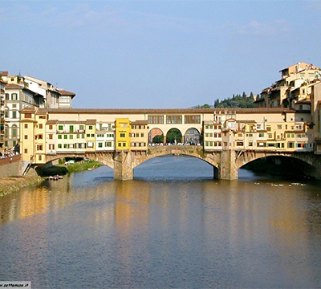
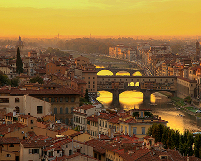

Osnovni podaci:
| Naziv: | Ponte Vecchio |
|---|---|
| Adresa: | Firenca |

Ponte Vecchio ili 'Stari most', srednjovjekovna je građevina koja povezuje dvije obale rijeke Arno. Sadašnji oblik potječe iz 14. stoljeća, dok prvi pisani dokumenti govore o mostu još u 10. stoljeću.
Ponte Vecchio napravljen je od tri glavna luka, od kojih najveći ima raspon od 30 metara, a druga dva po 27 metara. On je ujedno i jedini most koji je 'preživio' bombardiranja grada tijekom Drugoga svjetskog rata.
Danas je prepun zlatarnica i draguljarnica, dok su u prošlosti većinu činili mesari, koji su protjerani s izgradnjom čuvenog 'Corridoio Vasariano', svojevrsnog 'hodnika' koji spaja Palazzo Vecchio i Palazzo Pitti, tj. staru i novu rezidenciju obitelji Medici. Prodavaonice koje su vidljive s vanjske strane mosta dodane su u 17. stoljeću.


Jedna od starih priča kaže da je na ovom mjestu nastao i pojam stečaja, tj. bankrota. Kad trgovac više ne bi mogao platiti svoje dugove, klupa (tal. banco) na kojoj je prodavao svoja dobra, bila bi slomljena od strane gradskih vojnika, što bi se onda zvalo bancorotto, tj. slomljena klupa. Kako više ne bi imao svoj glavni alat za trgovinu, prodavač nije imao gdje poslovati, pa bi bankrotirao.
Oko Ponte Vecchija primijetit ćete brojne lokote koji 'ukrašavaju' ograde i sigurnosne lance uz cestu. Naime, ti lokoti pripadaju zaljubljenim parovima iz cijelog svijeta koji na njih upisuju svoja imena, a nakon što ih stave na lanac, bacaju ključ u rijeku Arno i time 'zaključavaju' svoju ljubav za sva vremena. Prava romantika.
| Naziv: | Ponte Vecchio |
|---|---|
| Adresa: | Firenca |